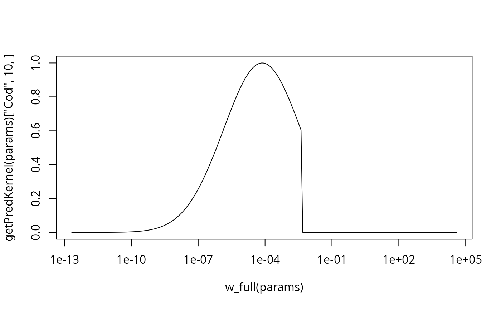

This is the most commonly-used predation kernel. The log of the predator/prey mass ratio is normally distributed.
Value
A vector giving the value of the predation kernel at each of the
predator/prey mass ratios in the ppmr argument.
Details
Writing the predator mass as \(w\) and the prey mass as \(w_p\),
the feeding kernel is given as
$$\phi_i(w, w_p) =
\exp \left[ \frac{-(\ln(w / w_p / \beta_i))^2}{2\sigma_i^2} \right]
$$
if \(w/w_p\) is larger than 1 and zero otherwise. Here \(\beta_i\) is the
preferred predator-prey mass ratio and \(\sigma_i\) determines the width of
the kernel. These two parameters need to be given in the species parameter
dataframe in the columns beta and sigma.
This function is called from setPredKernel() to set up the
predation kernel slots in a MizerParams object.
See also
Other predation kernel:
box_pred_kernel(),
power_law_pred_kernel(),
truncated_lognormal_pred_kernel()
Examples
params <- NS_params
plot(w_full(params), getPredKernel(params)["Cod", 10, ], type="l", log="x")
# The restriction that the kernel is zero for w/w_p < 1 is more
# noticeable for larger sigma
species_params(params)$sigma <- 4
plot(w_full(params), getPredKernel(params)["Cod", 10, ], type="l", log="x")
